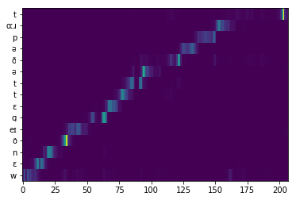
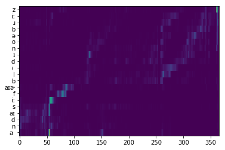

DeepSinger: Singing Voice Synthesis with Data Mined From the Web
Alignment
Good Alignment Example
Splitting Reward: $\mathcal{O} = 0.8024 $
Bad Alignment Example
Splitting Reward: $\mathcal{O} = 0.3196 $
Audio Samples
爱从不容许人三心两意
| Raw Audio | Vocal (after seperation) | GT (Linear+GL) | DeepSinger |
|---|---|---|---|
遇见浑然天成的交集
| Raw Audio | Vocal (after seperation) | GT (Linear+GL) | DeepSinger |
|---|---|---|---|
遮住你的眼睛
| Raw Audio | Vocal (after seperation) | GT (Linear+GL) | DeepSinger |
|---|---|---|---|